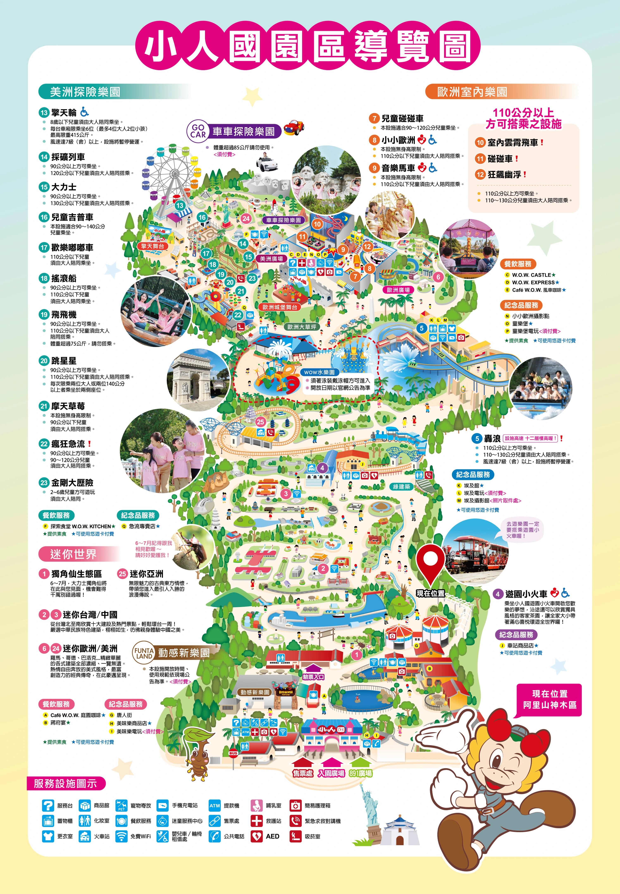

<div class="map-container">
  
</div>

<style>
  /* 2. 容器設定：模擬手機螢幕範圍，並隱藏超出畫面的部分 */
  .map-container {
    width: 100%;
    height: 100vh; /* 佔滿整個手機螢幕高度 */
    overflow: hidden; 
    position: relative;
    background-color: #fcebd1; /* 設定與地圖外框相近的底色 */
  }

  /* 3. 圖片初始狀態與過渡動畫設定 */
  #park-map {
    width: 100%;
    height: auto;
    transform: scale(1); /* 預設不放大 */
    /* 0.8秒平滑過渡，展現拉近感 */
    transition: transform 0.8s cubic-bezier(0.25, 1, 0.5, 1); 
  }

  /* 4. 觸發放大的動態 Class */
  .zoomed-in {
    transform: scale(2.5) !important; /* 放大 2.5 倍 */
    transform-origin: 70% 64%; /* 鎖定 Map_L 的「現在位置」精確座標 */
  }
</style>

<script>
  // 5. 頁面載入後自動觸發
  window.onload = function() {
    // 延遲 0.3 秒再開始拉近，讓視覺有緩衝空間
    setTimeout(function() {
      document.getElementById('park-map').classList.add('zoomed-in');
    }, 300);
  };
</script>
